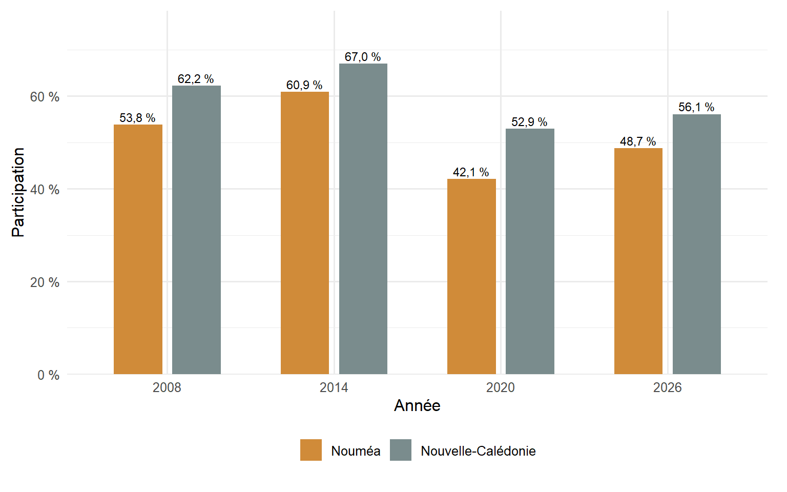
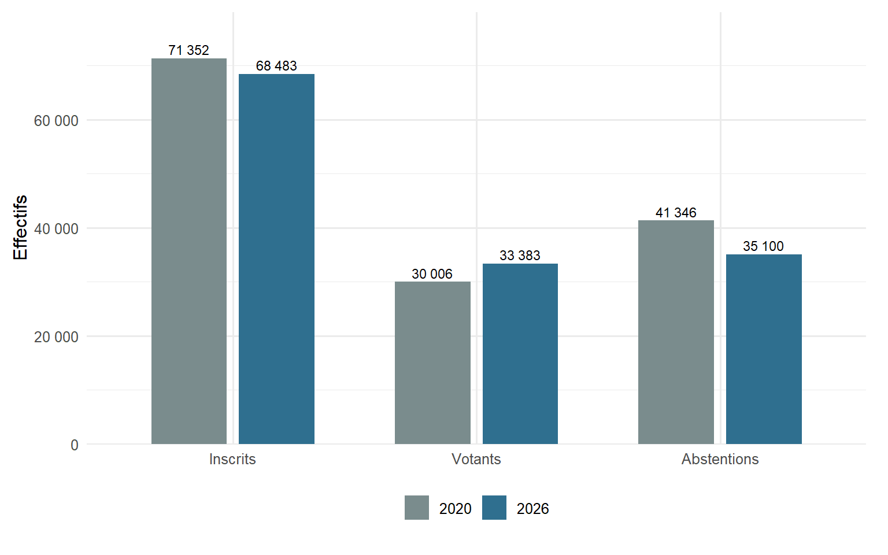
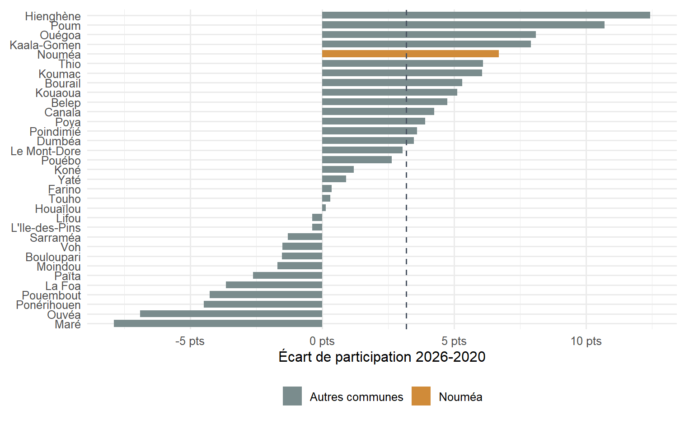
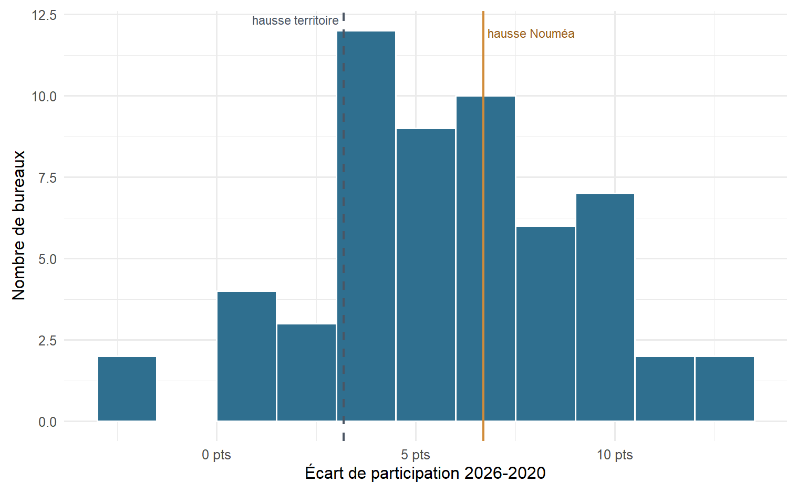
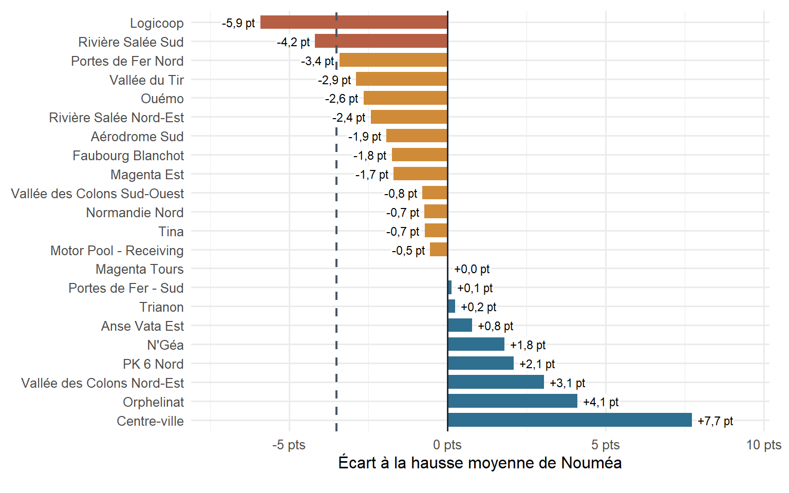
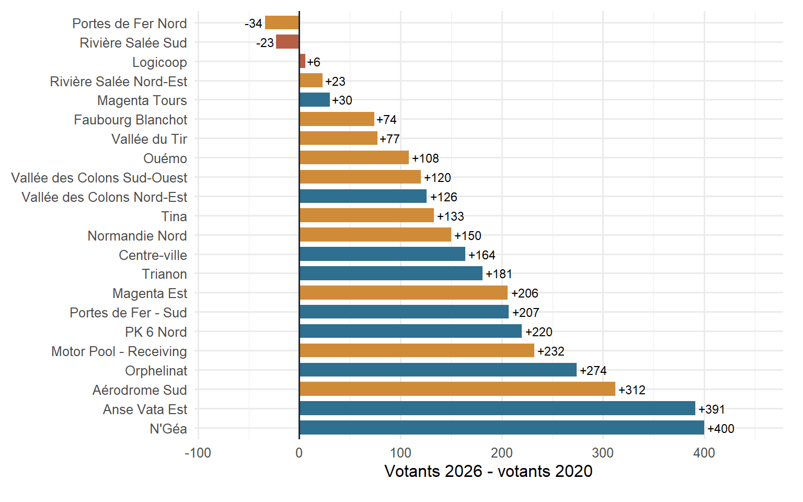
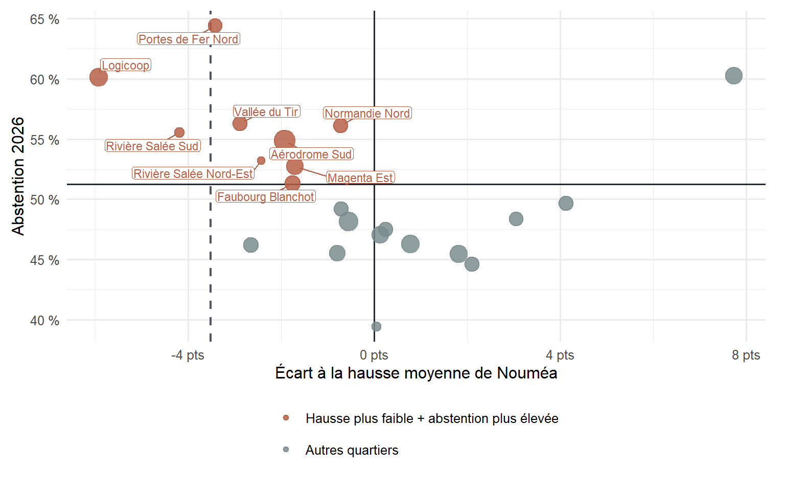

| Espace | Inscrits 2020 | Votants 2020 | Participation 2020 (%) | Inscrits 2026 | Votants 2026 | Participation 2026 (%) | Écart 2026-2020 (points) |
|---|---|---|---|---|---|---|---|
| Nouvelle-Calédonie | 213 047 | 112 681 | 52,9 | 219 001 | 122 804 | 56,1 | 3,2 |
| Nouméa | 71 352 | 30 006 | 42,1 | 68 483 | 33 383 | 48,7 | 6,7 |
| Autres communes | 141 695 | 82 675 | 58,3 | 150 518 | 89 421 | 59,4 | 1,1 |
| Lecture : premier tour des municipales 2020 et 2026. | |||||||
La première note publiée ici sur le regroupement des bureaux de vote à Nouméa avait un objectif assez simple : donner des ordres de grandeur sur les temps d’accès, pour apporter des repères chiffrés dans un débat public déjà très chargé. Elle a ensuite été reprise dans le débat public, notamment par Les Nouvelles calédoniennes, puis dans le contexte de l’interpellation du gouvernement par le sénateur Robert Xowie, relayée par NC La 1ère.
Il faut toutefois situer correctement ce type de travail. La note sur les temps d’accès n’est pas une étude d’impact complète du regroupement des bureaux de vote. Elle est une estimation exploratoire, fondée sur des hypothèses de distance et de population, destinée à objectiver une contrainte possible. C’est utile pour le débat public, mais cela ne suffit pas à établir si un scrutin est sincère ou non.
Le même principe vaut pour l’argument inverse. Dans la réponse publique, un raisonnement revient : la participation aurait augmenté aux municipales de 2026, y compris dans les quartiers où le regroupement était contesté. L’idée implicite est simple : si les électeurs sont venus plus nombreux, le regroupement n’aurait donc pas eu d’incidence.
« Les chiffres sont en hausse par rapport aux élections de 2020 »
Déclaration rapportée par NC La 1ère / Franceinfo dans l’article cité en introduction.
Ce billet examine cette déduction, sans chercher à trancher plus que les données ne le permettent. Il ne tranche pas juridiquement ou politiquement le débat ; il vérifie la solidité d’un raisonnement statistique. La hausse de participation est bien réelle. Mais elle laisse une autre question ouverte : est-ce que le regroupement des bureaux a rendu le vote plus difficile pour certains électeurs ?
Le point important est simple : une hausse de participation ne prouve pas, à elle seule, qu’il n’y a pas eu de problème d’accès. Si la participation remonte partout pour des raisons politiques ou conjoncturelles, un quartier peut voter davantage qu’en 2020 tout en progressant moins que les autres. C’est ce décalage qu’il faut regarder.
En résumé, quatre points guident l’analyse :
- la participation augmente bien à Nouméa ;
- cette hausse s’inscrit dans une hausse plus large du scrutin ;
- Nouméa reste très abstentionniste par rapport au reste du territoire ;
- à l’intérieur de Nouméa, certains quartiers progressent moins que la moyenne communale.
Nouméa progresse, mais reste très abstentionniste
Au premier tour des municipales, la participation à Nouméa passe de 42,05 % en 2020 à 48,75 % en 2026. L’augmentation est donc de +6,69 pt : en ce sens, l’affirmation d’une hausse est correcte.
Mais cette hausse n’est pas un argument suffisant pour écarter un effet du regroupement. Sur l’ensemble des 33 communes calédoniennes, la participation progresse aussi, de 52,89 % à 56,07 %, soit +3,18 pt. Dans les communes hors Nouméa, la hausse agrégée est plus limitée : +1,06 pt. Une partie de la hausse observée à Nouméa appartient donc à une dynamique plus générale du scrutin, qui ne peut pas être attribuée aux emplacements des bureaux de vote nouméens.
Il faut en outre distinguer la progression et le niveau. En 2026, malgré sa hausse, Nouméa reste à 48,75 % de participation, donc 51,25 % d’abstention. C’est -7,33 pt par rapport à la moyenne de Nouvelle-Calédonie et -10,66 pt par rapport aux autres communes prises ensemble. La ville progresse davantage, mais elle part de très bas et reste très abstentionniste.


À l’échelle de la Nouvelle-Calédonie, la carte confirme que la participation progresse largement. Mais elle montre aussi que Nouméa reste dans les classes basses du territoire : la hausse existe, sans faire disparaître la position très abstentionniste de la ville.


Le zoom dit la même chose plus clairement. Entre 2020 et 2026, plusieurs secteurs passent dans une classe supérieure. Mais, avec la même échelle que le reste de la Nouvelle-Calédonie, une grande partie de Nouméa reste encore sous les niveaux de participation observés ailleurs sur le territoire.
Un autre point de prudence concerne le choix de 2020 comme point de comparaison. Pour éviter de mélanger des scrutins de nature très différente, il vaut mieux rester ici sur les municipales : les référendums et les législatives ont des contextes politiques trop particuliers pour servir de jauge simple.
Sous cet angle, 2020 ressort nettement comme un point bas à Nouméa : 42,05 %, contre 53,81 % en 2008 et 60,87 % en 2014. Le niveau de 2026 (48,75 %) est donc bien en hausse par rapport à 2020, mais il reste inférieur aux deux municipales précédentes. Les municipales de 2026 sont donc un rebond à partir d’un niveau exceptionnellement bas.

Le graphique invite donc à garder deux idées ensemble : le creux de 2020 n’est pas propre à Nouméa, puisqu’il apparaît aussi à l’échelle de la Nouvelle-Calédonie ; mais Nouméa reste en dessous du niveau territorial à chaque municipale observée.
La hausse du taux de participation ne vient pas seulement d’un effet de dénominateur. À Nouméa, le nombre d’inscrits diminue de 2 869 entre 2020 et 2026, mais le nombre de votants augmente de 3 377. L’abstention recule de 6 246.

Cette première comparaison invite donc à la retenue. Elle ne permet pas de dire que le regroupement a empêché la participation de progresser. Elle ne permet pas non plus de dire que le regroupement n’a eu aucun effet. Elle montre seulement que, malgré le regroupement, la participation a augmenté dans un contexte où la participation augmente aussi ailleurs. Ce que l’on ne sait pas, c’est le niveau qu’aurait atteint la participation à Nouméa avec le maillage habituel des bureaux.
Le graphique suivant aide à situer cette hausse. Sur les 33 communes, 21 enregistrent une hausse de participation et 12 une baisse. Nouméa se situe dans le haut de la distribution des progressions, avec +6,69 pt, soit +3,51 pt au-dessus de la hausse moyenne observée sur l’ensemble du territoire. Cela confirme que la mobilisation nouméenne a réellement progressé ; cela ne suffit pas à conclure sur les conditions d’accès au vote.

Autrement dit, la hausse communale est un fait important, mais c’est un indicateur trop large. Elle agrège des dynamiques politiques, démographiques et territoriales très différentes : baisse du nombre d’inscrits, intensité de la compétition municipale, contexte post-crise, mobilisation différentielle selon les quartiers, et modification des lieux de vote. Pour évaluer l’argument avec un minimum de prudence, il faut donc descendre à l’intérieur de Nouméa.
À Nouméa, quels quartiers restent en retrait ?
À l’échelle des 57 bureaux de Nouméa, la participation progresse dans la quasi-totalité des cas. Seuls 2 bureaux enregistrent une baisse en points de participation entre 2020 et 2026. Mais cette lecture en “hausse ou baisse” est trop grossière.
Un second critère consiste à comparer chaque bureau à la hausse moyenne observée en Nouvelle-Calédonie (+3,18 pt). Sous cet angle, 9 bureaux de Nouméa progressent moins vite que l’ensemble du territoire. Si l’on compare chaque bureau à la hausse moyenne de Nouméa (+6,69 pt), 35 bureaux progressent moins vite que la commune.

À ce stade, l’échelle décisive n’est plus le bureau isolé. Pour comprendre quels territoires restent en retrait, il faut agréger les 57 bureaux par IRIS de rattachement, utilisé ici comme approximation de quartier. Ce n’est pas le quartier vécu au sens strict, mais c’est une maille stable pour comparer les secteurs. La question devient alors : quels quartiers progressent moins vite que la hausse moyenne de Nouméa ?


Cette seconde échelle change la focale. Elle ne sert plus à comparer Nouméa au reste de la Nouvelle-Calédonie, mais à voir les contrastes entre quartiers. On distingue mieux les secteurs du nord et de l’ouest qui restent dans les niveaux les plus bas, alors que les secteurs du sud et du sud-est ressortent davantage.
La réponse tient en trois groupes. 2 IRIS progressent moins que la moyenne de Nouvelle-Calédonie (+3,18 pt) : Logicoop et Rivière Salée Sud. 11 autres IRIS dépassent cette moyenne territoriale mais progressent moins que la moyenne de Nouméa (+6,69 pt) : Portes de Fer Nord, Vallée du Tir, Ouémo, Rivière Salée Nord-Est, Aérodrome Sud, Faubourg Blanchot, Magenta Est, Vallée des Colons Sud-Ouest, Normandie Nord, Tina et Motor Pool - Receiving. Les autres quartiers progressent davantage que la moyenne communale et tirent donc la moyenne nouméenne vers le haut.

La carte des écarts rend visible le point central de cette note : même quand la participation progresse, elle ne progresse pas partout avec la même intensité. Les hausses les plus faibles se concentrent notamment dans une partie du nord et de l’ouest de Nouméa, tandis que d’autres secteurs tirent la moyenne communale vers le haut.
Dans les deux graphiques qui suivent, les couleurs gardent la même lecture : rouge pour les quartiers qui progressent moins que la moyenne territoriale, orange pour ceux qui progressent moins que la moyenne de Nouméa, bleu pour ceux qui progressent davantage que la moyenne communale.

La lecture est directe : tout ce qui se situe à gauche de zéro progresse moins vite que la moyenne de Nouméa. La ligne pointillée correspond à l’écart qu’il faut atteindre pour progresser moins vite que la moyenne de Nouvelle-Calédonie. C’est le seuil le plus sévère : il ne concerne que Logicoop et Rivière Salée Sud.
Il faut ensuite regarder les volumes, parce qu’un écart en points peut venir d’une progression limitée du nombre de votants, d’une baisse du nombre d’inscrits, ou des deux. Dans les 13 IRIS en retrait par rapport à la moyenne de Nouméa, le solde agrégé est de +1 384 votants entre 2020 et 2026, pour 41 394 inscrits en 2026.

Ce second graphique évite une confusion importante. Les quartiers en retrait ne sont pas nécessairement des quartiers où la participation s’effondre en volume : Logicoop gagne légèrement des votants, tandis que Rivière Salée Sud en perd. Le signal est plutôt différentiel : ces quartiers ne suivent pas la hausse observée ailleurs dans Nouméa.
À l’échelle des quartiers, la hausse nouméenne est portée par une partie de la commune, pendant que Logicoop, Rivière Salée Sud et onze autres IRIS restent en retrait par rapport à la moyenne communale.
Ces quartiers sont-ils aussi plus abstentionnistes ?
À ce stade, il faut éviter de surinterpréter. Le croisement direct entre distance au bureau et participation est trop fragile pour servir de preuve : il dépend du découpage spatial retenu, du rattachement des électeurs au bureau, d’hypothèses de pondération par population et ne serait que partiel sans prendre en compte l’ensemble des autres facteurs pouvant influencer la participation. Ici, on fait autre chose : on décrit les quartiers qui progressent moins vite que la moyenne de Nouméa.
La lecture la plus utile est donc le cumul de deux signaux. D’un côté, une hausse de participation moins forte que la moyenne de Nouméa. De l’autre, une abstention 2026 plus élevée que la moyenne communale (51,25 %). Ce cumul concerne 9 IRIS : Portes de Fer Nord, Logicoop, Vallée du Tir, Normandie Nord, Rivière Salée Sud, Aérodrome Sud, Rivière Salée Nord-Est, Magenta Est et Faubourg Blanchot.

La ligne verticale noire marque la hausse moyenne de Nouméa : à gauche, les quartiers progressent moins vite que la commune. La ligne horizontale marque l’abstention moyenne de Nouméa : au-dessus, les quartiers sont plus abstentionnistes que la moyenne communale. Les points rouges sont donc ceux qui cumulent les deux signaux. Leur abstention moyenne aux municipales de 2026 est de 55,96 %, contre 48,04 % dans le reste de Nouméa.
On pourrait chercher des points de comparaison dans d’autres élections, mais ce serait vite trompeur : référendums, législatives et provinciales obéissent à des logiques de mobilisation très différentes. Pour ne pas mélanger les registres, on reste donc ici sur les municipales, et plus précisément sur ce que les données de 2026 disent des quartiers en retrait.
Le tableau ci-dessous se limite donc à ces quartiers. Il donne leur abstention en 2026, leur écart à la hausse moyenne de Nouméa et les temps d’accès moyens vers les 8 centres. Ces temps d’accès donnent un ordre de grandeur concret. Ils ne servent pas ici de test statistique.
| IRIS | abstention 2026 (%) | écart à la hausse de Nouméa | temps moyen 8 centres (min) | hausse vs bureaux habituels (min) |
|---|---|---|---|---|
| Portes de Fer Nord | 64,4 | −3,4 | 21,2 | 13,1 |
| Logicoop | 60,1 | −5,9 | 44,6 | 31,4 |
| Vallée du Tir | 56,3 | −2,9 | 8,3 | 0,4 |
| Normandie Nord | 56,1 | −0,7 | 41,5 | 32,0 |
| Rivière Salée Sud | 55,5 | −4,2 | 23,7 | 15,2 |
| Aérodrome Sud | 54,8 | −1,9 | 12,7 | 7,6 |
| Rivière Salée Nord-Est | 53,2 | −2,4 | 28,5 | 17,0 |
| Magenta Est | 52,7 | −1,7 | 26,9 | 13,9 |
| Faubourg Blanchot | 51,3 | −1,8 | 26,8 | 18,8 |
| Lecture : quartiers qui cumulent une hausse de participation inférieure à la moyenne de Nouméa et une abstention 2026 supérieure à la moyenne communale. Les temps d'accès sont descriptifs. | ||||
Ce tableau donne une lecture concrète : on voit les quartiers où les deux signaux se superposent, leur niveau d’abstention en 2026 et l’ordre de grandeur de leur accès aux centres de vote. Ces indicateurs décrivent une situation, ils ne prétendent et ne suffisent pas à attribuer une cause unique à l’abstention.
Ce que les données permettent de dire
L’affirmation selon laquelle la participation a augmenté à Nouméa entre les municipales de 2020 et celles de 2026 ne clôt pas le débat : elle montre que la participation a augmenté malgré le regroupement, dans un contexte où elle remonte aussi ailleurs. Elle ne dit pas ce qu’aurait été la participation avec le maillage habituel des bureaux. Autrement dit, elle ne permet pas de conclure mécaniquement à l’absence d’effet du regroupement.
Derrière le débat statistique, il y a aussi une question démocratique plus simple : tous les citoyens d’une même commune disposent-ils de conditions concrètes comparables pour aller voter ? Dire que la participation a augmenté ne répond pas non plus à cette question. Une hausse générale peut coexister avec des contraintes d’accès plus fortes dans certains quartiers.
La lecture la plus prudente est donc la suivante : Nouméa progresse, tout en restant très abstentionniste ; certains quartiers progressent moins vite que la moyenne communale ; et plusieurs d’entre eux cumulent aussi une abstention supérieure à la moyenne en 2026. Ces résultats ne démontrent pas, à eux seuls, un effet causal du regroupement. Ils montrent plutôt pourquoi le débat ne peut pas être refermé par le seul constat d’une hausse de participation. C’est dans cet espace, entre alerte exploratoire et preuve définitive, que les données peuvent utilement nourrir le débat public.
Sources et données utilisées
- Articles de contexte : Les Nouvelles calédoniennes, “Une étude relance le débat sur le nombre de bureaux de vote à Nouméa” ; NC La 1ère / Franceinfo, “Provinciales 2026 : le sénateur Robert Xowie interpelle le gouvernement sur la répartition des bureaux de vote à Nouméa”.
- Résultats électoraux par bureau de vote — Ministère de l’Intérieur, pour les municipales 2020 et 2026.
- Participation aux municipales 2008 et 2014 — pages Wikipédia dédiées aux élections municipales de 2008 à Nouméa et aux élections municipales de 2014 à Nouméa.
- IRIS RGP 2019 — ISEE Nouvelle-Calédonie, utilisés pour rattacher les bureaux aux quartiers.
- Temps d’accès piéton — mêmes sources et mêmes traitements que dans l’article sur le regroupement des bureaux de vote à Nouméa : réseau BDROUTE-NC de la DITTT, grille de population 2020 / Human Settlement Footprint de la Pacific Community (SPC), calculs de réseau en RGNC91-93 / Lambert New Caledonia (EPSG:3163).
- Cartes réalisées à partir des résultats harmonisés, sous R et QGIS.